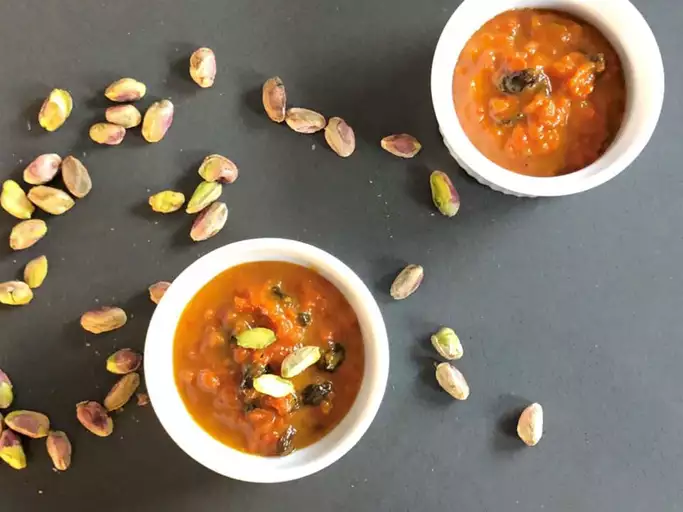

Gajar ka halwa recipe

Descrption
Carrot halwa, or gajar ka halwa, is a traditional Indian dessert that's deliciously rich and creamy. This recipe uses whole milk, not condensed milk. Serve warm with vanilla ice cream for a real treat!
Ingredients
- 2 tablespoons ghee
- 2 pounds Carrot,grated
- 1 and half quarts whole milk
- 2 cups white sugar
- ½ cup raisins
- 1 ½ teaspoons ground cardomom
- 1 pinch safforn threads
- 8 tablespoons chopped pistachio nuts
Directions
- Step 1:Heat ghee in a large saucepan over medium heat and add carrots. Cook and stir briefly, about 3 minutes. Pour in milk and increase heat; bring to a boil and cook, stirring constantly, for 5 minutes. Reduce heat to low and simmer gently, uncovered, and stirring occasionally until moisture evaporates, about 1 hour.
- Step 2:Bring carrot mixture back to a boil; add sugar, raisins, cardamom, and saffron. Cook and stir until mixture has thickened, about 10 minutes.
- Step 3:Ladle carrot halwa into 8 individual serving dishes. Top each serving with 1 tablespoon pistachios. Serve warm or chill before serving.